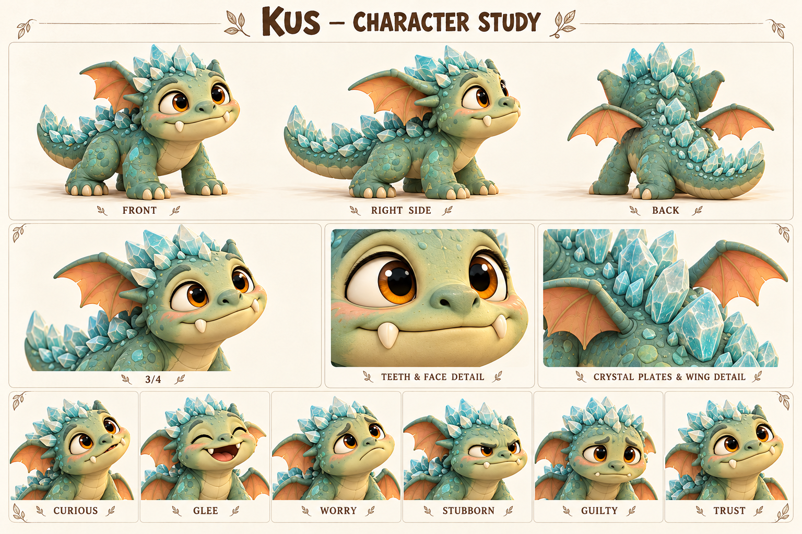

Чего хочет
Исследовать новое и оставаться рядом со знакомым безопасным спутником.
Исследует мир зубами и учится отпускать вещь, не боясь потерять связь.
Рабочий новый спутник Тиша; маленький кристальный дракончик, не умеющий летать.

Четыре лапы; два заметных зуба; короткие крылья; округлые аквамариновые пластины.
Палитра: Шалфейная бирюза / крем / аквамарин.
Кусь запоминает мир через фактуру: гладкая шишка, мягкий ремешок, прохладный камень. В рабочей версии первой встречи Тиш замечает его у корней, где тот пытается вытащить застрявший обрывок ткани. Вместо погони Тиш освобождает ткань и садится рядом. Дракончик возвращается сам — сначала к ремешку, потом к знакомому голосу. Это предложение для будущей сцены, а не уже показанное событие демо.
Его маленькие крылья помогают держать равновесие при прыжке, но не поднимают тело в воздух. Он может смотреть на птицу и пробовать повторить движение, после чего находить наземный путь. Эта особенность не требует истории болезни, проклятия или обязательного исцеления. Кристаллы на спине — часть тела; они не расходуются как ресурс и не превращают каждый жест в световой эффект.
Поначалу Кусь удерживает понравившуюся вещь, особенно когда волнуется: так проще сохранить рядом знакомое. Тиш учится предлагать обмен и давать время, а дракончик — отпускать без страха, что всё исчезнет. Со временем он сможет сам принести ремешок вместо того, чтобы утащить его. Происхождение следа укуса на ухе Тиша остаётся отдельной тайной: эта карточка не назначает Куся виновником.
Исследовать новое и оставаться рядом со знакомым безопасным спутником.
Научиться доверять возвращению и отпускать предмет без тревоги.
Резкое отнятие находки, громкая погоня и потеря знакомого рядом.
Проверяет вещи зубами и крепче держится, когда его торопят.
Любопытство, настойчивость, чуткость к жестам и неожиданная изобретательность на земле.
Выглядит маленьким грозным зубастиком, но сильнее всего нуждается в спокойном доверии.
Темп и ритм. Невербально: короткое любопытное урчание, сопение, писк и паузы.
Слова и построение фразы. Не произносит человеческие слова. Два зуба видны в характерной улыбке, но не мешают считывать эмоцию.
Юмор. Самоуверенная попытка тащить предмет, который больше его, и гордый взгляд после маленького успеха.
Под давлением. Прижимает крылья, хвост ближе к телу, крепче держит предмет.
Как проявляет заботу. Подходит сам, касается носом и кладёт находку рядом.
Чего избегать. Не делать агрессивной собакой, говорящим саркастичным помощником или обязательным виновником укуса Тиша.
| Ситуация | Реплика или действие |
|---|---|
| Знакомство · действие | Нюхает край сумки, смотрит на Тиша и ждёт. |
| Просьба · действие | Подталкивает шишку носом и коротко урчит. |
| Тревога · действие | Прижимает крылья и удерживает ремешок, не нападая. |
| Обмен · действие | Смотрит на предложенный предмет, разжимает зубы и остаётся. |
| Доверие · действие | Сам кладёт находку у ног Тиша. |
| Подпись карточки | «Крылья есть. Пешком быстрее» — подпись автора, не речь дракона. |
| Подпись на листе | Состояние | Актёрская задача |
|---|---|---|
| CURIOUS | Любопытство | Морда вперёд, глаза широко, крылья чуть приподняты. |
| GLEE | Радость | Открытая улыбка, хвост свободно движется. |
| WORRY | Тревога | Глаза ищут спутника, тело ниже. |
| STUBBORN | Упрямство | Лапы расставлены, взгляд исподлобья. |
| GUILTY | Виноватость | Для зрителя: голова ниже и предмет предложен обратно; не человеческая моральная речь. |
| TRUST | Доверие | Глаза мягкие, крылья расслаблены, сам сокращает дистанцию. |
Движение: Четыре лапы, два крыла; бег с короткими прыжками, крылья работают для равновесия. Не зависает и не планирует над пропастью.
| План | Что показывает |
|---|---|
| Общий план спереди | Силуэт, лицо, одежда, положение ступней; без потери главных признаков. |
| Боковой ракурс | Глубина фигуры, профиль лица, предметы на ремнях и посадка одежды. |
| Вид со спины | Причёска, крепления, рюкзак либо панцирь; признаки не зеркалятся. |
| Средний план в три четверти | Лицо вместе с характерным жестом и позой корпуса. |
| Крупные детали | Материал и узнаваемые предметы; особенности лица, уха, руки или панциря. |
| Шесть эмоциональных портретов | Взгляд, брови, рот и положение головы; у существ также усики, крылья и поза. |
Первая встреча и маленькая история об обмене, где Тиш тоже учится терпению.